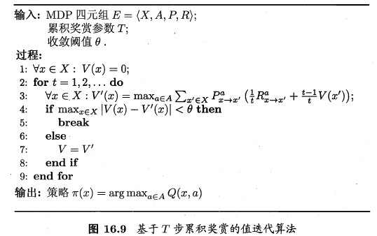
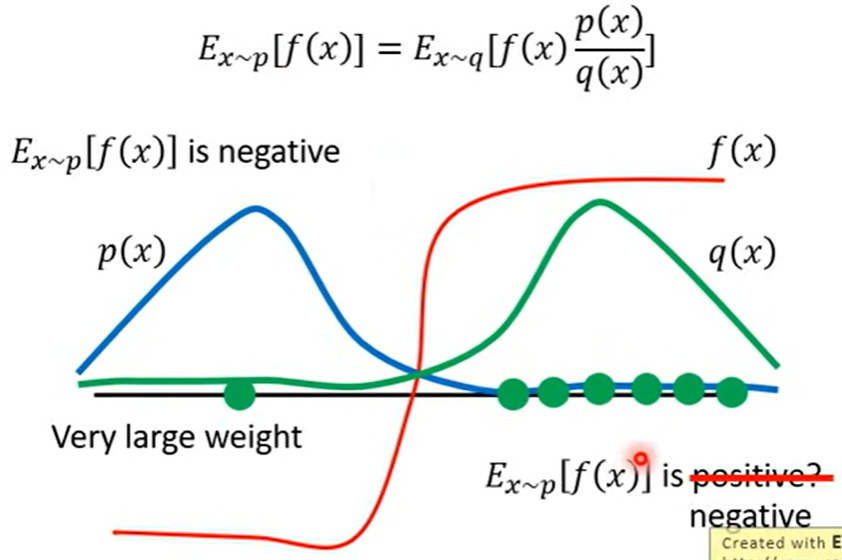
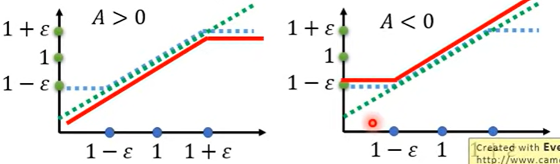

强化学习&深度强化学习笔记
一些基本概念
- 定义：智能体与环境的不断交互（即在给定状态采取动作），进而获得奖励，此时环境从一个状态转移到下一个状态。智能体通过不断优化自身动作策略，以期待最大化其长期回报或收益（奖励之和）。
- 状态State：The state s is a complete description of the state of the world where the states are fully observable. Whereas observation o is a partial description of the state of the world.
- 动作Action：The agent performs the action in the environment to reach the next state from the current state.
- 策略Policy： Deterministic Policy确定性策略μ(s)=a 和Probility Policyπ(a,s)=Pr(a∣s)
p(τ)=p(s0)pθ(a0∣s0)p(s1∣s0,a0)pθ(a1∣s1)p(s2∣s1,a1)⋯上式中p(sn+1∣sn,an)可能不是概率，具体取决于环境
- 奖励Reward and Return：某一个tiemstep的reward为：rt=R(st,at,st+1)
- Finite-horizon undiscounted return:R(τ)=t=0∑Trtwhere τ=(s0,a0,s1,a1,⋯)
- Infinite-horizon discounted return:R(τ)=t=0∑∞γtrtwhere γ is discounting factor
- Value function：分为状态值函数和状态动作值函数，模型未知（免模型学习）时二者难以转换。
- state-value function：the expected total reward.Vπ(s)=E[i=1∑T]γi−1ri∀s∈SOptimal state-value function has high possible value function compared to other value function.V∗(s)=πmaxVπ(s) ∀s∈Soptimal policy: π∗=argmaxπVπ(s) ∀s∈S
- Action-value function: the expected return for an agent starting from state s and taking arbitrary action a then forever act according to policy π.
- 策略迭代和值迭代：不断迭代进行策略评估和改进，直到策略收敛、不再改变为止.这样的做法称为"策略迭代"。策略改进与值函数的改进时一致的，因此可以将策略改进视为值函数的改善，值迭代如下图所示：

常见强化学习算法及分类
分类标准
- 根据Agent训练与测试采用的策略是否一致，有off-policy和on-policy。on-policy相当于自己与环境交互，学到知识；off-policy相当于看别人与环境交互，学到知识。 例如DQN算法中，训练采用ϵ−greedy策略，在实际使用时采用a∗=argmaxaQπ(s,a)策略。
- 策略优化方式不同:基于价值、基于策略、Actor-Critic Algorithms。
Policy Gradient
一种基于策略优化的算法。在强化学习任务中，我们希望T步累计奖赏的期望最大，即
Rθ=τ∑R(τ)pθ(τ)=Eτ∼pθ(τ)[R(τ)]想让上述期望最大，算法采用类似gradient descent方法，因此有：∇Rθθ←=τ∑R(τ)∇pθ(τ)=τ∑R(τ)pθ(τ)pθ(τ)∇pθ(τ)=τ∑R(τ)pθ(τ)∇logpθ(τ)=Eτ∼pθ(τ)[R(τ)∇logpθ(τ)]≈N1i=1∑NR(τi)∇logpθ(τi)=N1i=1∑Nt=1∑TR(τi)∇logpθ(ati∣sti)θ+η∇Rθ∇f(x)=f(x)∇logf(x)
上述算法存在两个问题：一是环境中可能所有的状态动作对应的reward均为正，在采样数不足时，采样到的动作的weight会上升，没被采样的动作自然下降，但这显然是不合理的；二是所有状态动作对采用一样的reward也不合理，评价动作只需考虑之后的情况。如下式子可帮助改进：∇Rθ≈N1i=1∑Nt=1∑T(t′=t∑Tγt′−trt′i−b)∇logpθ(ati∣sti)b≈E[R(τi)]Define Advantage function Aθ(st,at)=t′=t∑Tγt′−trt′i−b
PPO算法
off-policy方法，好处是可以重复利用采样到的数据训练θ，原本policy descent在用τ1更新θ后就需要重新采样τ2，效率不高。要理解PPO，首先要了解重要性采样的概念
- Ex∼p[f(x)]≈N1i=1∑Nf(xi)xi is sampled from p(x)现在的问题是我们只能从q(x)中采样xi,因此有：Ex∼p[f(x)]=∫f(x)p(x)dx=∫f(x)q(x)p(x)q(x)dx=Ex∼q[f(x)q(x)p(x)]在使用重要性采样时还需要使得p,q尽可能相似，否则可能出现下图所示的问题，即在采样数不够的情况下两个期望可能差距很大。
介绍了重要性采样后，我们将其应用到policy gradient中，将其改造为off-policy⇒⇒∇Rθ=Eτ∼pθ′(τ)[pθ′(τ)pθ(τ)R(τ)∇logpθ(τ)]E(st,at)∼πθ′[pθ′(st,at)pθ(st,at)Aθ′(st,at)∇logpθ(ati∣sti)]E(st,at)∼πθ′[pθ′(st∣at)pθ(st∣at)pθ′(st)pθ(st)Aθ′(st,at)∇logpθ(ati∣sti)]pθ′(st)pθ(st)≈1上述式子是gradient，我们利用∇f(x)=f(x)∇logf(x),可以得到PPO中想要优化的式子（去掉gradient）：Jθ′(θ)=E(st,at)∼πθ′[pθ′(st∣at)pθ(st∣at)Aθ′(st,at)]⇒ JPPOθ′(θ)=Jθ′(θ)−βKL(θ,θ′)if KL(θ,θ′)>KLmax, increase βif KL(θ,θ′)<KLmin, decrease β上式就是PPO算法优化的公式。事实上，PPO算法的前身TRPO与其非常相似：θmaxJTRPOθ′=Jθ′(θ) s.t. KL(θ,θ′)<δ注意上述KL散度是计算根据θ,θ′得到的分布的散度
PPO-clip算法，核心思想就是利用clip函数的特性来约束两个分布不要差距太大：JPPO−clipθk(θ)≈(st,at)∑min(pθk(at∣st)pθ(at∣st)Aθk(st,at),clip(pθk(at∣st)pθ(at∣st),1−ϵ,1+ϵ)Aθk(st,at))
Actor-Critic